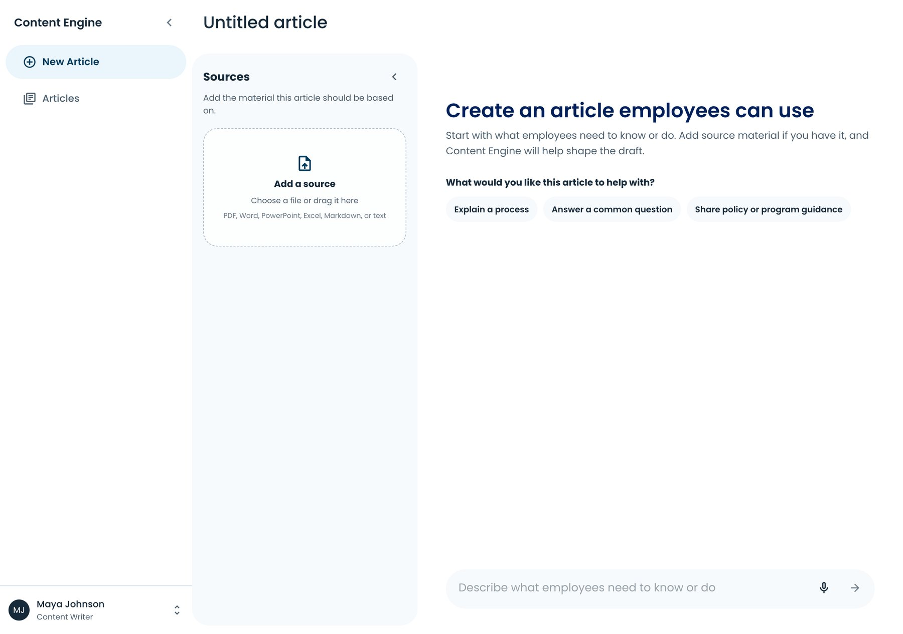
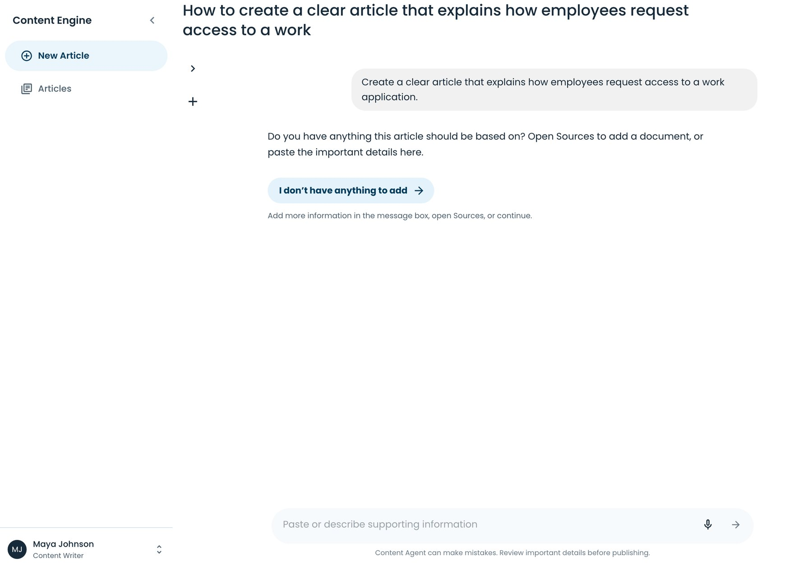
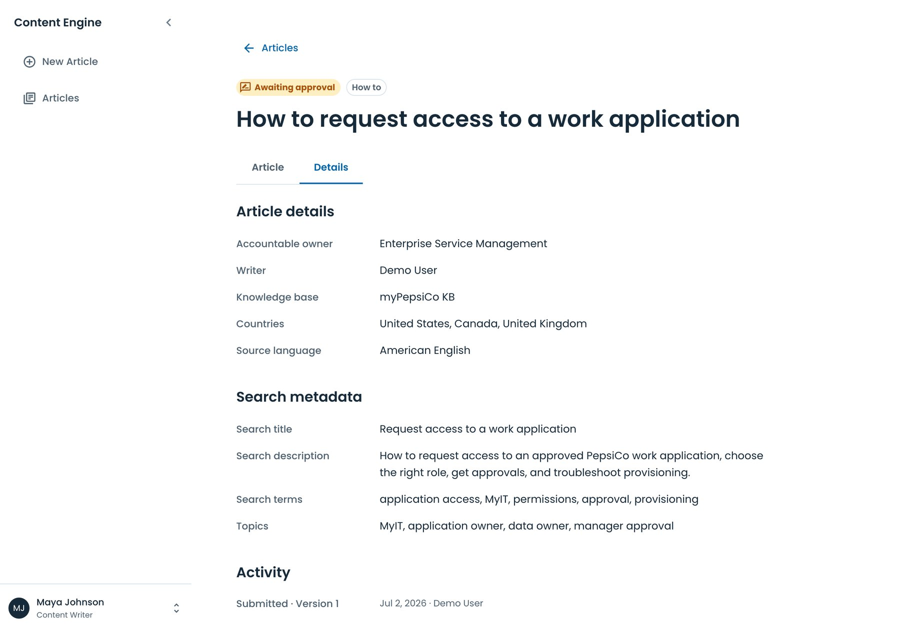
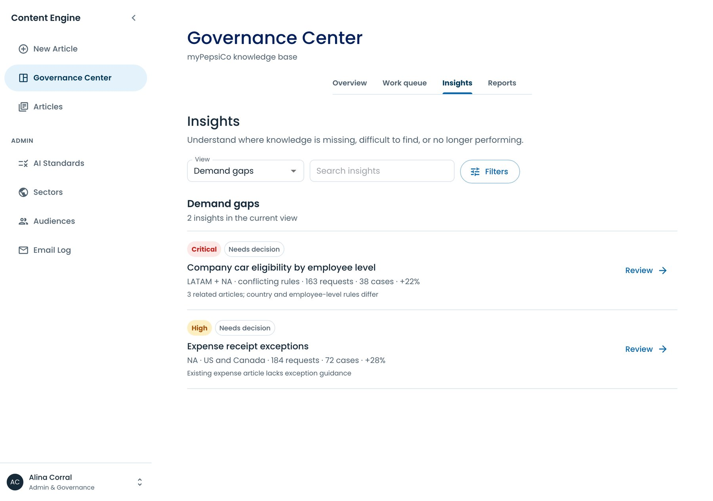
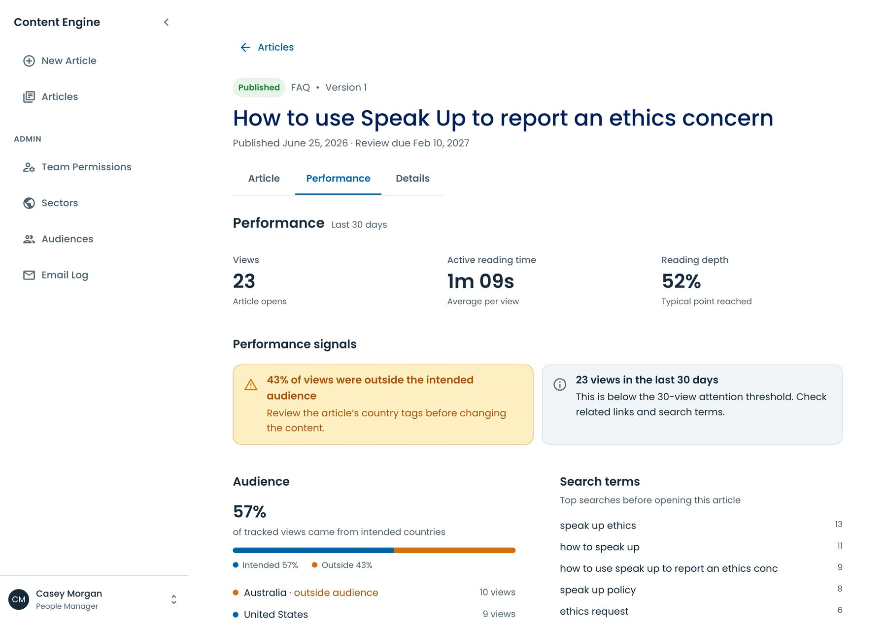

Content Engine · Self-initiated at PepsiCo
I turned an unowned problem into a tested AI writing tool, with people in charge of what ships.
Content Engine helps PepsiCo employees write and govern knowledge articles across markets. I spotted the gap, built a working prototype in two weeks, and tested it with nine employees.
TL;DR

Create
- Sources come first, so drafts start from real material.
- Starter prompts replace a blank page.
All screens show dummy data.
The stakes
Employees already drafted with AI. Nothing kept the rest of the work connected.
Writers used the tool alongside their main jobs, so familiar patterns mattered more than power features.
The authority model
Interpret a brief, organize sources, draft, revise, localize and explain a suggestion.
Required fields, status, readiness checks, review dates and duplicate or staleness signals.
Select sources, verify facts, resolve exceptions, approve and publish.
Key decisions
Conversation plus sources
ChoseA familiar conversational flow, with source documents beside the draft.
Said no toA blank prompt box that leaves people guessing.
Separate language from rules
ChoseAI drafts; metadata, workflow states and readiness checks stay predictable and testable.
Said no toLetting the model own compliance and workflow.
People make the final call
ChoseFive human gates, from confirming the brief to approving publication.
Said no toAuto-publishing, or silent edits driven by analytics.

01 · Guided conversation
- The tool asks for sources before it drafts.
- Writers can always continue without them.

02 · Rules-owned details
- Ownership, markets and search metadata are fields, not prose.
- Status shows where the article is in review.

03 · Governance Center
- Gaps ranked by severity, each waiting on a decision.
- People choose what to fix; nothing changes on its own.

03 · Lifecycle signals
- Signals suggest a review; they never edit the article.
- Audience and search data show who the article really reaches.
What testing showed
Each session tested the next feature or changed its direction.
“We can see our feedback influencing what was implemented since the last time we talked.”
Research participant“How can we get this next week? This is going to provide so much value.”
Research participantFeedback added the conversational drafting and the Governance Center content owners asked for.
Prototype boundaries
Creation with sources, guided conversation, writer, manager and admin views, governance.
Generated responses, some workflow steps, analytics and policy checks use mock data.
Retrieval and citations, permissions, audit history, model monitoring, evaluations.
Outcome
2 weeks → a tested POC
Canada is proposed as the first pilot, and funding proposals are in progress.
A pilot would measure time to a reviewable draft, how much help writers still need, and whether they produce standards-aligned articles on their own.
Status: user-tested proof of concept.
What I took forward
The most useful thing I designed was the boundary.
Deciding where AI stops made the product easier to trust and to build. I now start AI workflows by mapping which decisions belong to the model, the rules and the people.